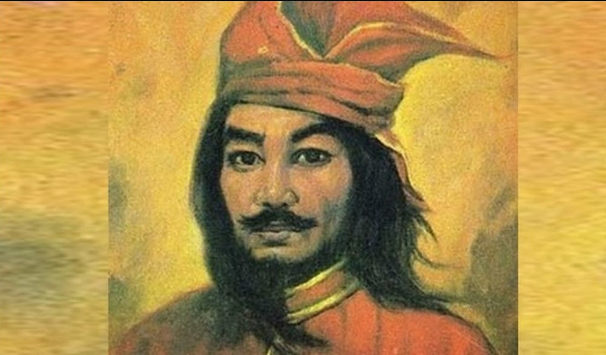
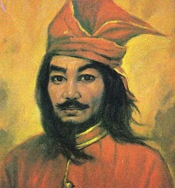

Sejarah

Sultan Hasanuddin memiliki nama asli I Mallombasi Muhammad Bakir Daeng Mattawang Karaeng Bonto Mangape. Sultan Hasanuddin adalah sosok pahlawan nasional yang berdiri di garda terdepan menentang penjajahan Belanda. Karena keberaniannya menentang penjajahan Belanda, ia dijuluki sebagai Ayam Jantan dari Timur atau dalam bahasa Belanda “e Haantjes van Het Oosten”.
Penjajah Belanda tak pernah gegabah saat menghadapi Sultan Hasanuddin yang dikenal memiliki bentuk perjuangan yang unik. Sultan Hasanuddin lahir di Makassar pada 12 Januari 1631 dan meninggal dalam usia yang masih terbilang muda yakni 39 tahun atau pada tanggal 12 Juni 1670.
Biografi

Terkenal dengan sebutan 'Ayam Jantan Dari Timur', Sultan Hasanuddin adalah pahlawan nasional dari Sulawesi, tepatnya dari Kerajaan Gowa. Sultan Hasanuddin adalah Raja Gowa ke-16, putra dari I Manuntungi Daeng Mattola yang bergelar Sultan Malikussaid (ayah) dan ibunya bernama I Sabbe To'mo Lakuntu. Ilmu berpolitik, diplomasi, ilmu pemerintahan dan ilmu perang dipelajari Hasanuddin ketika ikut mendampingi ayahnya melakukan perundingan-perundingan penting, ditambah dengan bimbingan Karaeng Pattingaloang, mangkubumi kerajaan Gowa, yang sangat berpengaruh dan cerdas. Pergaulan Hasanuddin yang luas dengan rakyat jelata, orang asing dan Melayu membuatnya sering dipercaya menjadi utusan ayahnya untuk mengunjungi daerah dan kerajaan lain.
Pada usia 21 tahun, Sultan Hasanuddin ditugaskan untuk menjabat bagian pertahanan Kerajaan Gowa. Di sinilah Sultan Hasanuddin mulai bermain strategi mengatur pertahanan untuk melawan serangan Belanda yang ingin memonopoli perdagangan di Maluku. Setahun kemudian ayahnya wafat, dan atas titah beliau, Sultan Hasanuddin yang seharusnya tidak ada dalam garis tahta dinobatkan menjadi raja karena kepintaran dan keahliannya. Peperangan dengan Belanda berlangsung alot karena dua kubu memiliki kekuatan armada yang sebanding. Hingga Belanda menemukan bahwa daerah-daerah di bawah kekuasaan Gowa mudah dihasut dan dipecah belah. Arung Palakka yang merupakan sahabat sepermainan Sultan Hasanuddin saat kecil memimpin pemberontakan Raja Bone terhadap Kerajaan Gowa. Tahun 1662, Belanda kembali mengobarkan perang saudara dan di tahun 1664, Sultan Ternate, Sultan Buton dan Arung Palakka berhasil disatukan di bawah kendali Belanda. Setelah 16 tahun berperang tidak hanya dengan Belanda namun juga dengan rakyatnya sendiri (yang memberontak), Sultan Hasanuddin akhirnya kalah dalam peperangan tahun 1669. Di tahun yang sama Sultan Hasanuddin mundur dari jabatannya sebagai Raja Gowa dan memilih menjadi pengajar agama Islam sambil tetap menanamkan rasa kebangsaan dan persatuan. Sultan Hasanuddin wafat tanggal 12 Juni 1670, dan tidak mau bekerja sama dengan Belanda hingga akhir hayatnya.
Perjuangan
Pengangkatan Sultan Hasanuddin sebagai Raja Gowa ke-16
I Mallombasi Daeng Mattawang dinobatkan menjadi Raja Gowa ke-16 dengan gelar Sultan Hasanuddin pada bulan Nopember 1653 menggantikan ayahnya pada saat beliau berusia 22 tahun. Sultan Hasanuddin bukanlah putra mahkota yang mutlak menjadi pewaris kerajaan, dikarenakan derajat kebangsawanan ibunya lebih rendah dari ayahnya. Sultan Hasanuddin diangkat menjadi raja karena pesan dari ayahnya sebelum wafat. Wasiat dari Raja kepada Sultan Hasanuddin disetujui oleh Mangkubumi Kerajaan Karaeng Pattingaloang. karena melihat sifat-sifat Hasanuddin yang tegas, berani dan juga memiliki kemampuan serta pengetahuan yang luas.
Kerajaan Gowa Menentang Usaha Monopoli VOC
Sultan Hasanuddin melanjutkan perjuangan ayahandanya melawan VOC yang menjalankan monopoli perdagangannya di Indonesia bagian timur. VOC menganggap orang - orang Makasar dan Kerajaan Gowa sebagai penghalang dan saingan berat. Bahkan VOC menganggap sebagai musuh yang sangat berbahaya. Sultan Hasanuddin memerintah Kerajaan Gowa ketika Belanda sedang berusaha menguasai hasil rempah-rempah dan memonopoli hasil perdagangan wilayah timur Indonesia. Salah satu caranya adalah melarang orang Makasar berdagang dengan musuh-musuh Belanda seperti Portugis dsb. Tentu saja keinginan Belanda ditolak mentah-mentah Raja Gowa. Kerajaan Gowa menentang dengan keras hak monopoli yang hendak dijalankan VOC. Sultan Alaudin, Sultan Muhammad Said, dan Sultan Hasanuddin berpendirian sama. Bahwa Tuhan menciptakan bumi dan lautan untuk dimiliki dan dipakai bersama. Itu sebabnya Kerajaan Gowa menentang usaha monopoli VOC dan ini yang membuat VOC berusaha untu menghancurkan dan menyingkirkan Kerajaan Gowa. Kerajaan Gowa pada saat itu merupakan kerajaan terbesar yang menguasai jalur perdagangan.
Peperangan Melawan Belanda dan Perjanjian Bongaya
Dalam perjalanannya, terjadi pertempuran yang berlangsung di medan perang Sulawesi Selatan antara orang-orang Makassar yang dipimpin oleh Sultan Hasanuddin dengan VOC dipimpin oleh Laksamana Speelman. Tahun 1666, di bawah pimpinan Laksamana Cornelis Speelman, Belanda berusaha menundukkan kerajaan-kerajaan kecil, tetapi mereka belum berhasil menundukkan Kerajaan Gowa. Karena Sultan Hasanuddin berusaha menggabungkan kekuatan kerajaan-kerajaan kecil di Indonesia bagian timur untuk melawan Belanda. Pertempuran-pertempuran terus berlangsung begitu pula selalu diadakannya berbagai perjanjian perdamaian dan gencatan senjata, namun selalu dilanggar oleh VOC dan merugikan Kerajaan Gowa. Pada saat peperangan Belanda terus menambah kekuatan pasukannya hingga pada akhirnya Gowa terdesak dan semakin lemah. Dengan berbagai pertimbangan akhirnya Sultan Hasanuddin bersedia menandatangani Perjanjian Bungaya, pada 18 November 1667. Setelah merasa Perjanjian Bungaya itu sangat merugikan bagi rakyat dan Kerajaan Gowa, akhirnya pada 12 April 1668 perang kembali pecah. Sultan Hasanuddin memberikan perlawanan sengit. Bantuan tentara dari luar, menambah kekuatan pasukan Belanda, hingga akhirnya berhasil menerobos benteng terkuat Kerajaan Gowa yaitu Benteng Sombaopu pada tanggal 24 Juni 1669.
Sultan Hasanuddin Turun Tahta
Setelah kekalahan yang diderita Kerajaan Gowa dan mundurnya Sultan Hasanuddin dari benteng Somba Opu ke benteng Kale Gowa, maka usaha Speelman memecah belah persatuan kerajaan Gowa terus dilancarkan. Usaha ini berhasil, setelah diadakan "pengampunan umum". Siapa yang mau menyerah diampuni Belanda. Beberapa pembesar kerajaan menyatakan menyerah. Karaeng Tallo dan Karaeng Lengkese menyatakan tunduk pada Perjanjian Bungaya. Sultan Hasanuddin sudah bersumpah tidak akan sudi bekerja sama dengan penjajah Belanda. Pada tanggal 29 Juni 1669 Sultan Hasanuddin meletakkan jabatan sebagai Raja Gowa ke-16 setelah selama 16 tahun berperang melawan penjajah dan berusaha mempersatukan kerajaan Nusantara. Sebagai penggantinya ditunjuk putranya I Mappasomba Daeng Nguraga Bergelar Sultan Amir Hamzah. Sesudah turun tahta, Sultan Hasanuddin banyak mencurahkan waktunya sebagai pengajar Agama Islam dan berusaha menanamkan rasa kebangsaan dan persatuan.